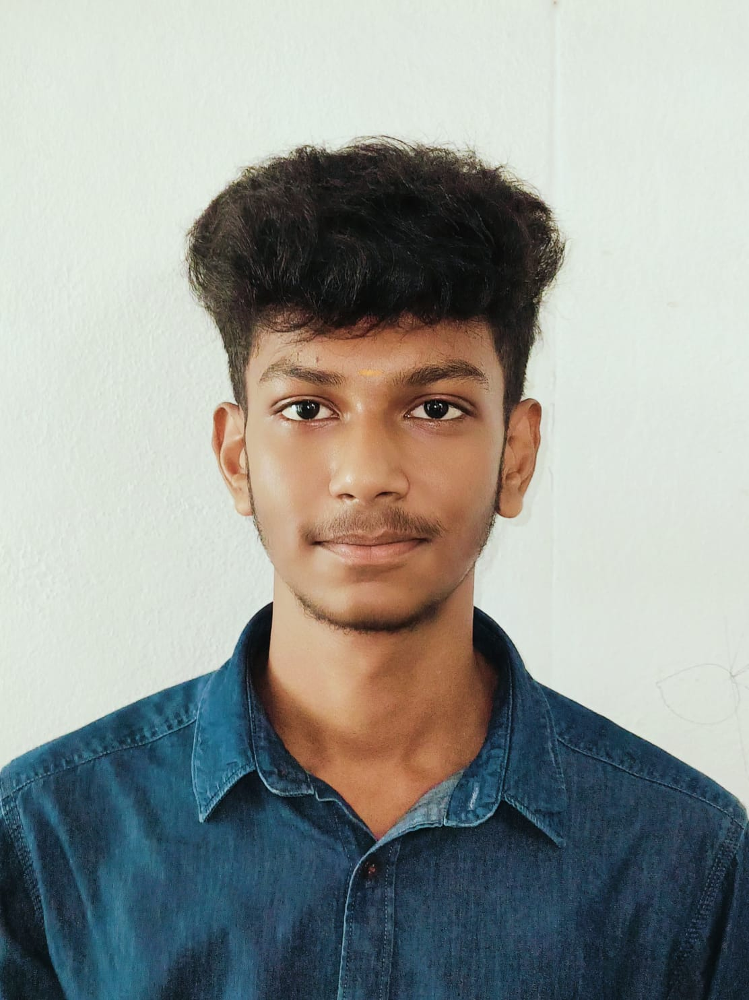

SAMITHKUMAR R
Aspiring Software Developer
Ph.No : 6379551005
LinkedIn : SAMITHKUMAR-R
GitHub : SAMITHKUMAR-R
OBJECTIVE
SKILLS
Programming Languages : Python ( Basics – Intermediate ) , Java ( Core ) Frontend : HTML , CSS Core Concepts : Object-Oriented Programming (OOP), Basics of Data Structures Tools : VS Code , Git & GitHub
EDUCATION
B.Tech Information Technology ( 2024-2028 ). Higher Secondary Examination - TN ( 2024 ). Secondary School Examination – TN ( 2022 ).
PROJECT
- Built a Python application to manage student records using file handling.
- Implemented CRUD operations and modular code structure.
- Designed a responsive portfolio website using AI and deployed it using GitHub Pages.
- Improved understanding of frontend layout and UI design.